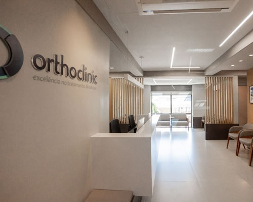
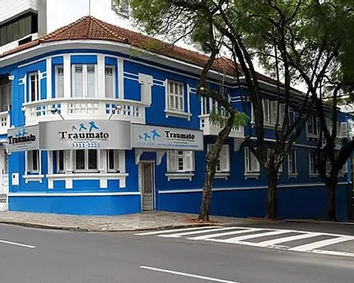

Onde o Dr. Alexandre Borba atende
Consultas em três endereços de Porto Alegre. O agendamento é feito pelo WhatsApp (51) 99948-1717.
Locais de consulta

Orthoclinic, Centro Clínico da PUCRS
Av. Ipiranga, 6690, sala 301
Jardim Botânico, Porto Alegre, RSVer no mapa
Clínica de Traumatologia e Ortopedia Moinhos de Vento
Rua Felipe Camarão, 4 e 22
Porto Alegre, RSSite da clínica Ver no mapaUrgetrauma
Av. Assis Brasil, 2827, 5º andar
Cristo Redentor, Porto Alegre, RSSite da clínica Ver no mapa
Hospitais onde opera
O hospital é definido junto com o paciente, conforme o procedimento.

Hospital Moinhos de Vento

Hospital Mãe de Deus

Hospital São Lucas da PUCRS

Hospital Divina Providência

Blanc Hospital